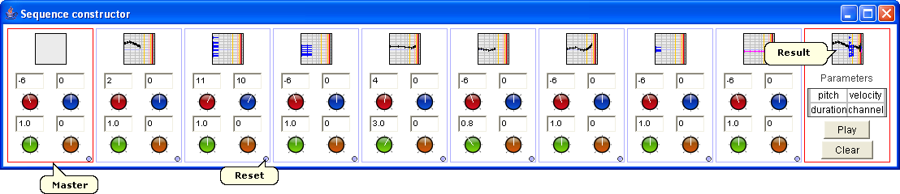

The sequence constructor works like old analog sequencers: it includes 8 boxes where you can drop musical expressions. For each box, pitch, velocity, duration and channel can be adjusted: you can set them by vertically moving the mouse on the rotative buttons, and precise them by pressing Ctrl. Moreover, a reset button is available. The sequence constructor can be used in real-time: the sequence of all boxes content is played in loop, and you can dynamically changes expressions and their settings.
The left master box allows to operate on all other boxes at the same time: a musical objet dropped in it will be copied in the 8 boxes, pitch, velocity, duration and channel can be adjusted globally. The result is available in the right box.